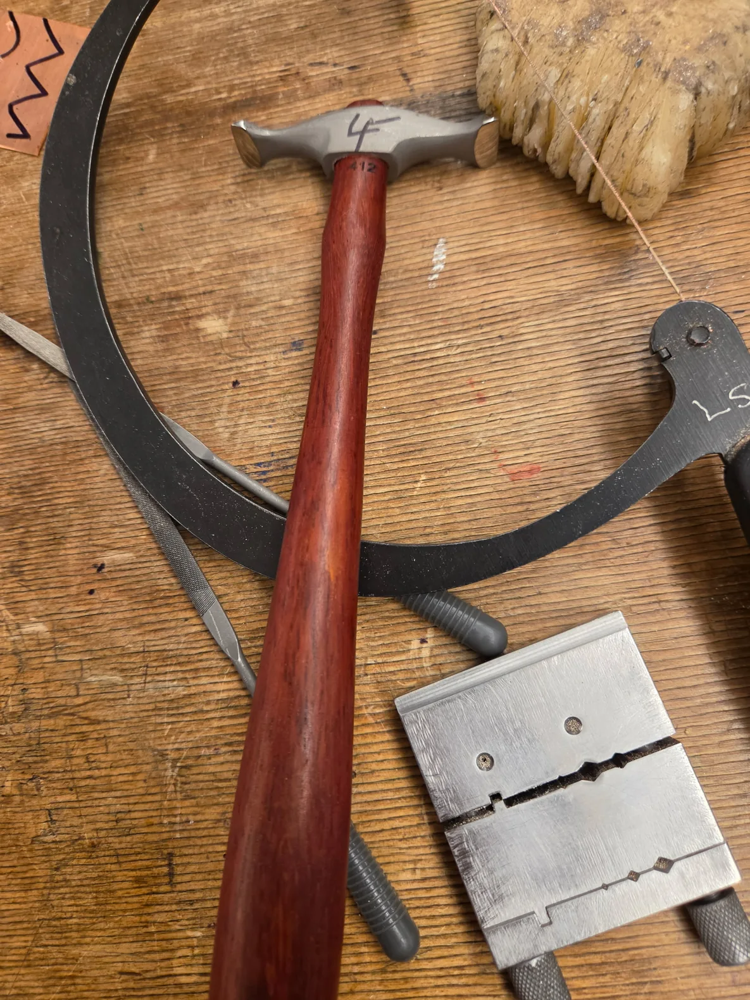

A note from the founder
Hi, I’m Jaime.
I’ve always been the person who asks, “Where did you find that?” After four years at the jeweler’s bench, I usually have a second question. “Who made it?” Learning to work with silver changed what I notice. Even the smooth edge of a ring can tell you something about the person who made it.
That curiosity brought me to this little building on Main Street, a place with roots in Lincoln and a history of local shops. I opened Conversation Pieces to share work I love from independent makers, including artists right here in the White Mountains. The jewelry on the shelves is theirs. My part is finding it and introducing you.
I want coming through the door to feel like dropping in on a friend. Take your time. Try something on. If a piece makes you curious, ask me about it. I’d love to tell you whose hands it passed through on its way here.
Jaime Saxe